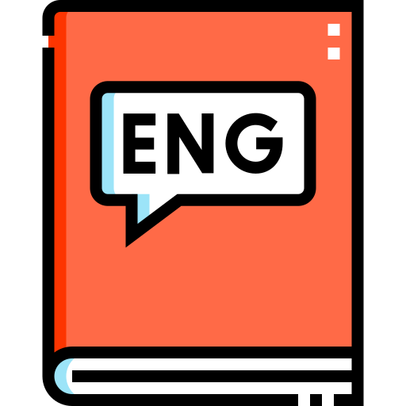
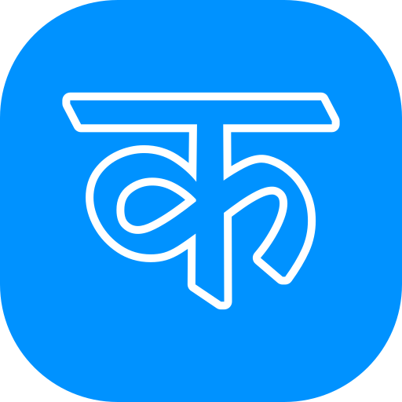
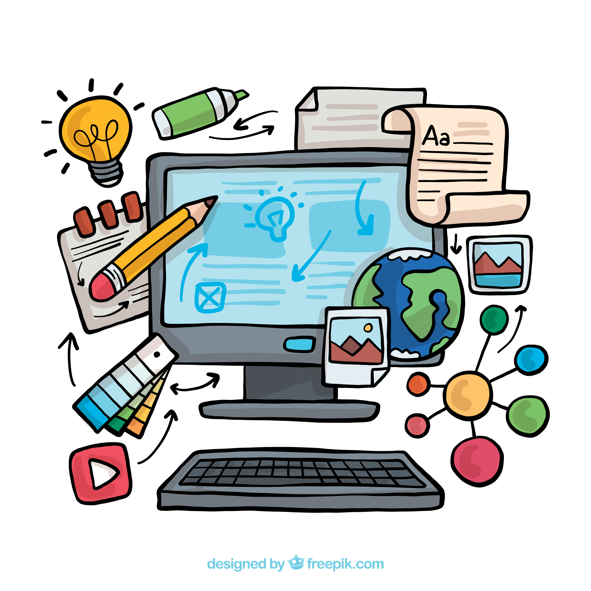

First Basics Classes
(1st to 5th)
These classes for 1st basic knowledge for our Students.(यह छोटे बच्चों के लिए foundation strong करने की class है।) Basic Reading & Writing , Hindi & English Alphabet , Basic Math (Addition, Subtraction, multiply & divide) ,General Knowledge ,Good Habits & Discipline
Special Features For First Basics Classes:-
👉Friendly teaching ,
👉Activity-based learning
👉Regular test

Second Basic Classes
(6th to 8th)
These classes for 2nd basic knowledge for our Students. (यह classes students को strong base देने के लिए हैं ताकि आगे की पढ़ाई आसान हो।) Math (Algebra, Geometry etc) , Science (Physics, Chemistry, Biology basics) , Social Science , English Grammar , Hindi Grammar
Special Features For Second Basic Classes:-
👉Weekly test ,
👉Doubt clearing class
👉Concept-based teaching

Non-Matric & Matric Classes
(9th & 10th)
These classes for Advance knowledge for our Students. (Board exam की तैयारी के लिए important classes।) Full syllabus coverage , Important questions & answers , Previous year questions , MCQ + subjective practice etc..
Special Features For Non-Matric & Matric Classes:-
👉Daily practice set ,
👉Monthly test
👉बोर्ड exam preparation

10+2 High Classes
(11th & 12th(Arts))
These classes for 10+2 high knowledge for our Students. (Arts stream के students के लिए advanced level preparation .) Geography , History , Psychology , Political Science , Economics , English , Hindi & Answer writing skills etc...
Special Features For 10+2 High Classes:-
👉Board-Oriented Notes ,
👉Important Questions
👉Writing Practice

English Basic Classes
(1st to 8th)
These classes for basic English knowledge with speaking for our Students (English सीखने की शुरुआत करने वाले बच्चों के लिए।) Basic English Grammar , Vocabulary , Sentence making , Reading & Writing , Speaking practice etc....
Special Features For English Basic Classes:-
👉Daily Speaking Practice ,
👉Fun Learning Methods
👉Pronunciation Improvement

Advance English Classes
(9th to 12th)
These classes for Advance English knowledge with speaking for our Students (Fluent English बोलने और समझने के लिए।) Advanced Grammar , Spoken English , Conversation practice , Interview skills , Writing skills
Special Features For Advance English Classes:-
👉Daily conversation ,
👉Personality development
👉Confidence building

Mathematics
(गणित)
गणित (Mathematics) तार्किक सोच, समस्या-समाधान (problem-solving) और सटीकता विकसित करने वाला एक मूलभूत विषय है। यह डेटा विश्लेषण, इंजीनियरिंग, कंप्यूटर विज्ञान, और वित्तीय योजना जैसे क्षेत्रों में करियर के व्यापक अवसर खोलता है, साथ ही दैनिक जीवन में समय, धन और माप को समझने में मदद करता है।
Benefits of Mathematics:-
👉Improves Problem Solving Skills(समस्या समाधान की क्षमता|)
👉Develops Logical Thinking(तार्किक सोच का विकास|)
👉Makes the Brain Sharp(दिमाग को तेज बनाता है|)

Science
(विज्ञान)
विज्ञान हमारे जीवन को आसान, सुरक्षित और तकनीकी रूप से उन्नत बनाता है। यह चिकित्सा, संचार (इंटरनेट/फोन), और कृषि में क्रांतिकारी बदलाव लाता है। विज्ञान तार्किक सोच (Critical Thinking) विकसित करता है, समस्याओं का समाधान ढूंढता है, और प्राकृतिक दुनिया को समझने में मदद करता है। यह एक सुनहरे भविष्य के लिए अनिवार्य है।
Benefits of Science:-
👉Technological Advancement(तकनीकी विकास|)
👉Makes Life Easier(जीवन को आसान बनाता है|)
👉Medical Advancement(चिकित्सा में क्रांति|)

Social Science
(सामाजिक विज्ञान)
सामाजिक विज्ञान (Social Science) मानव समाज, व्यवहार और संबंधों का अध्ययन है, जो हमें नागरिक शास्त्र, इतिहास, भूगोल और अर्थशास्त्र के माध्यम से जागरूक नागरिक बनाता है। इसके प्रमुख फायदे हैं - व्यावहारिक समस्याओं को सुलझाना, आलोचनात्मक सोच, नैतिक मूल्यों का विकास, और दुनिया की बेहतर समझ। यह समाज के हर दिन के जीवन को प्रभावित करता है।
Benefits of Social Science:-
👉Moral & Social Values(सामाजिक और नैतिक मूल्य|)
👉Cultural Understanding(सांस्कृतिक समझ|)
👉Understanding Society(सामाजिक समझ|)
Sanskrit
(संस्कृत)
संस्कृत भाषा (Sanskrit Language) न केवल भारत की प्राचीनतम और समृद्ध भाषा है, बल्कि यह व्याकरणिक रूप से अत्यंत वैज्ञानिक और सटीक है। यह ज्ञान, संस्कृति, और भारतीय दर्शन की मुख्य आधारशिला है, जो स्मृति को तेज करने, कंप्यूटर प्रोग्रामिंग के लिए अनुकूल होने और योग/आयुर्वेद को समझने में सहायता करती है।
Benefits of Sanskrit:-
👉Cultural and Spiritual Knowledge(सांस्कृतिक और आध्यात्मिक ज्ञान|)
👉Basis of Many Languages(अन्य भाषाओं में सहायक|)
👉Career Opportunities(व्यावसायिक विकल्प|)
English Literature
(अंग्रेजी साहित्य)
अंग्रेजी साहित्य (English Literature) केवल कहानियों का अध्ययन नहीं है, बल्कि यह मानवीय भावनाओं, इतिहास, संस्कृति और आलोचनात्मक सोच का एक व्यापक क्षेत्र है। इसके अध्ययन से भाषा में निपुणता, विश्लेषणात्मक क्षमता (critical thinking), रचनात्मक लेखन और विभिन्न संस्कृतियों के प्रति समझ विकसित होती है। यह करियर के लिए उत्कृष्ट संचार कौशल और लेखन क्षमता प्रदान करता है।
Benefits of English Literature:-
👉Development of Ethical Understanding (नैतिक समझ का विकास|)
👉Enhanced Language Proficiency (उन्नत भाषाई क्षमता|)
👉Creativity & Empathy (रचनात्मकता और सहानुभूति|)

English Grammar
(अंग्रेजी ग्रामर)
अंग्रेजी ग्रामर (English Grammar) भाषा का ढांचा है, जो सही तरीके से लिखने और बोलने में मदद करता है। इसके फायदे हैं: सटीक संचार (Communication), आत्मविश्वास से अंग्रेजी बोलना, गलतियों (Errors) को कम करना, पेशेवर लेखन (Professional Writing) में सुधार, और साक्षात्कार (Interviews) या प्रतियोगी परीक्षाओं में सफलता प्राप्त करना।
Benefits of English Grammar:-
👉Accurate Communication (सटीक और प्रभावी संचार|)
👉Understanding Structure(भाषा को गहराई से समझना|)
👉Career & Education(करियर और शिक्षा में लाभ|)

Hindi Literature
(हिन्दी साहित्य)
हिन्दी साहित्य (Hindi Literature) मानव जीवन, संस्कृति और भावनाओं को अभिव्यक्त करने वाली एक सशक्त कला है। यह मानसिक शांति, आलोचनात्मक सोच और भाषा में निपुणता प्रदान करता है, साथ ही यूपीएससी (UPSC) जैसी परीक्षाओं में उच्च स्कोरिंग और प्रशासनिक समझ विकसित करने में सहायक है। यह भारतीय संस्कृति का संरक्षण व ज्ञानवर्धन का उत्तम माध्यम है।
Benefits of Hindi Literature:-
👉Cultural Preservation(संस्कृति का संरक्षण|)
👉Art of Expression(अभिव्यक्ति की कला|)
👉Intellectual Growth(बौद्धिक विकास|)

Hindi Language
(हिन्दी व्याकरण)
हिन्दी व्याकरण (Hindi Grammar) भाषा को शुद्ध, व्यवस्थित और अर्थपूर्ण बनाने का विज्ञान है, जो भाषा के मानक रूप (Standard Form) को निर्धारित करता है। यह संचार में स्पष्टता, शुद्ध लेखन और प्रभावी संवाद के लिए अनिवार्य है। व्याकरण के माध्यम से ही शब्द (संज्ञा, सर्वनाम, क्रिया) और वाक्य संरचना (Syntax) का सही ज्ञान होता है।
Benefits of Hindi Language:-
👉Mastery over Language(भाषा पर पकड़|)
👉Structural Knowledge(संरचनात्मक ज्ञान|)
👉Clear Communication(स्पष्ट संचार|)

English Translation
(अंग्रेजी अनुवाद)
अंग्रेजी अनुवाद हमें विभिन्न भाषाओं को आसानी से समझने में मदद करता है। यह विभिन्न देशों और संस्कृतियों के लोगों को जोड़ता है। अंग्रेजी अनुवाद सीखना शिक्षा, संचार और करियर के लिए बहुत महत्वपूर्ण है।
Benefits of English Translation:-
👉Useful for Education(शिक्षा के लिए उपयोगी|)
👉Global Communication(वैश्विक संचार|)
👉Access to Knowledge(ज्ञान तक पहुंच|)

Word Meaning
(शब्दार्थ)
शब्दार्थ सीखने से हमारी शब्दावली बढ़ती है। यह हमें वाक्यों और पाठ को स्पष्ट रूप से समझने में मदद करता है। यह अंग्रेजी, हिंदी जैसी नई भाषाएँ सीखने में बहुत महत्वपूर्ण है।
Benefits of Word Meaning:-
👉Useful in Learning Languages
👉Improves Writing Skills
👉Improves Vocabulary

Life Skills
(जीवन कौशल)
जीवन कौशल (Life Skills) वे क्षमताएं हैं जो हमें रोजमर्रा की चुनौतियों का सामना करने, सकारात्मक व्यवहार रखने और एक संतुलित, सफल जीवन जीने में मदद करती हैं। यह विषय आत्मविश्वास बढ़ाने, तनाव प्रबंधन, प्रभावी संचार (Communication), और बेहतर निर्णय लेने (Decision Making) की योग्यता विकसित करता है, जिससे व्यक्तिगत और व्यावसायिक विकास होता है।
Benefits of Life Skills:-
👉Positive Behavior & Resilience (सकारात्मक व्यवहार और लचीलापन|)
👉Self-awareness & Confidence (आत्म-जागरूकता और आत्मविश्वास|)
👉Effective Decision Making (प्रभावी निर्णय क्षमता|)

Drawing
(चित्रकला)
ड्रॉइंग (चित्रकला) रचनात्मकता, एकाग्रता, और भावनात्मक अभिव्यक्ति को बढ़ाने वाला एक बेहतरीन विषय है। यह तनाव कम करता है, अवलोकन क्षमता (observation skills) विकसित करता है, और मानसिक स्वास्थ्य में सुधार लाता है। यह दृश्य संचार का एक माध्यम है जो करियर के कई अवसर (जैसे ग्राफिक डिजाइनर, आर्टिस्ट, इलस्ट्रेटर) भी प्रदान करता है।
Benefits of Drawing:-
👉Emotional Expression (भावनाओं की अभिव्यक्ति|)
👉Boosts Creativity(रचनात्मकता में वृद्धि|)
👉Builds Confidence(आत्मविश्वास में वृद्धि|)
Basic Computer
(बेसिक कंप्यूटर)
कंप्यूटर एक इलेक्ट्रॉनिक उपकरण है जो डेटा को इनपुट के रूप में लेता है, उसे प्रोसेस करता है, और आउटपुट (परिणाम) प्रदान करता है। मुख्य रूप से यह हार्डवेयर (भौतिक भाग) और सॉफ्टवेयर (प्रोग्राम्स) से बना है। इसका उपयोग गणना (Calculation), स्टोरेज, और इनपुट/आउटपुट क्रियाओं के लिए किया जाता है।
Benefits of Computer:-
👉Online Education & Services (ऑनलाइन शिक्षा और सेवाएँ|)
👉Job Opportunities (नौकरी के अवसर|)
👉Digital Literacy (डिजिटल साक्षरता|)

(6 years Experience)
Gaurav Sir
(B. Tech)

(9 years Experience)
Abhishek Sir
(Bsc.(Math))

(6 years Experience)
Vivek Pal Sir
(B.ed)

(5 years Experience)
Dev Sir
(M.D.)

👉 Established in 2023, Smart Coaching Centre is a trusted institute for quality education and academic training.
We are committed to providing high-quality, affordable, and result-oriented coaching to school students, job seekers,
and aspiring learners.
👉 2023 में स्थापित, स्मार्ट कोचिंग सेंटर गुणवत्तापूर्ण शिक्षा और प्रशिक्षण का एक विश्वसनीय संस्थान है। हम छात्रों को उच्च-गुणवत्ता, किफायती और
परिणाम-उन्मुख कोचिंग प्रदान करने के लिए प्रतिबद्ध हैं।
👉 Our mission is to provide career-focused and concept-based education that helps students build strong fundamentals
and achieve academic success. We focus on both theoretical understanding and practical learning, ensuring students are
well-prepared for exams and future challenges.
👉 हमारा मिशन छात्रों को कैरियर-केंद्रित और अवधारणा-आधारित शिक्षा प्रदान करना है, जिससे वे मजबूत आधार बना सकें और अपने शैक्षणिक लक्ष्यों को
प्राप्त कर सकें। हम सैद्धांतिक ज्ञान के साथ-साथ व्यावहारिक समझ पर भी जोर देते हैं।
👉 We are dedicated to delivering top-quality education, personalized guidance, and regular practice, helping students
improve their performance and confidence.
👉 हम छात्रों को बेहतरीन शिक्षा, व्यक्तिगत मार्गदर्शन और नियमित अभ्यास प्रदान करते हैं, जिससे उनका आत्मविश्वास और परिणाम दोनों बेहतर होते हैं।
✅ Easy & Simple Teaching Method (सरल और आसान पढ़ाई)
✅ Regular Tests & Practice (नियमित टेस्ट और अभ्यास)
✅ Focus on Every Student (हर छात्र पर विशेष ध्यान)
✅ Experienced Teachers (अनुभवी शिक्षक)
✅ Affordable Fees (किफायती फीस)
✅ Career Counseling & Job Support
✅ Open Time :- Sunday to Friday (Morning & Evening)